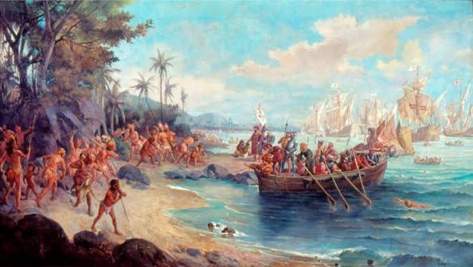
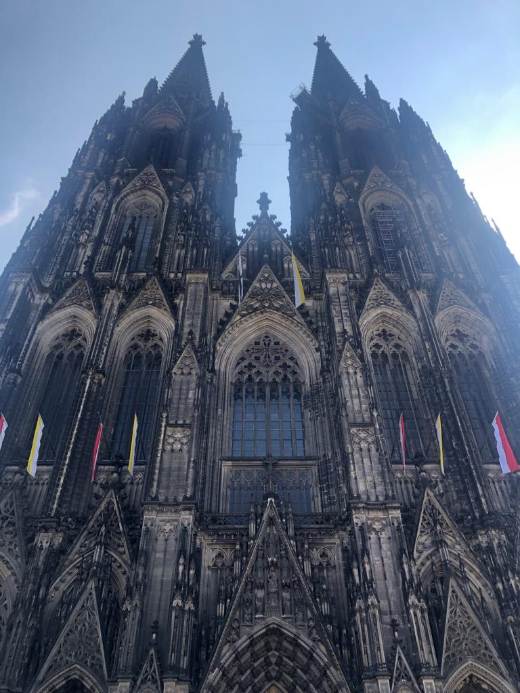

Meu primeiro post
Por: Rafaela Estruchok
Boas-vindas ao meu novo blog! Aqui vou compartilhar dicas de programação e curiosidades da área de tecnologia.
Vou compartilhar conhecimentos sobre coriosidades gerais!
Por: Rafaela Estruchok
Boas-vindas ao meu novo blog! Aqui vou compartilhar dicas de programação e curiosidades da área de tecnologia.

Por: Rafaela Estruchok
O celular foi inventado em 1973, porém, ele é completamente diferente daquele que conhecemos hoje.
Por: Rafaela Estruchok
O ursinho de pelúcia foi inventado entre 1902 e 1903 de forma simultânea por dois fabricantes independentes.
/Fonte: stud história
/Fonte: The National Museum of Computing
Por: Rafaela Estruchok
O Saturn V foi o primeiro foguete a levar seres humanos à Lua. Ele decolou no dia 16 de julho de 1969 transportando a histórica missão Apollo 11.
Fonte: Apollo 11.

Por: Rafaela Estruchok
Em 22 de abril de 1500, a esquadra de Pedro Álvares Cabral chegou ao litoral da Bahia. Este evento marcou o início da colonização portuguesa e transformou profundamente a história do Brasil
Fonte: terra.

Por: Rafaela Estruchok
Kölner Dom é uma obra-prima da arquitetura gótica, o ponto turístico mais visitado da Alemanha e um Patrimônio Mundial da UNESCO. Sua construção levou 632 anos para ser concluída, começando em 1248 e terminando em 1880
Fonte: Catedral de Colôniaoo
Por: Rafaela Estruchok
Kölner Dom é uma obra-prima da arquitetura gótica, o ponto turístico mais visitado da Alemanha e um Patrimônio Mundial da UNESCO. Sua construção levou 632 anos para ser concluída, começando em 1248 e terminando em 1880
Fonte: Catedral de Colônia00
Por: Rafaela Estruchok
O complexo do Santuário Nacional de Aparecida é cercado por fatos surpreendentes que vão muito além do óbvio. Sua grandiosidade arquitetônica, mistérios estruturais e curiosidades históricas encantam fiéis e entusiastas do turismo
Fonte: Simbolismo do Nicho.